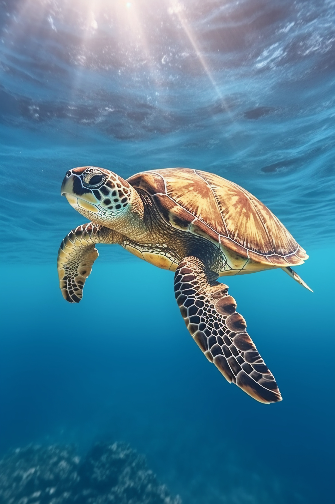
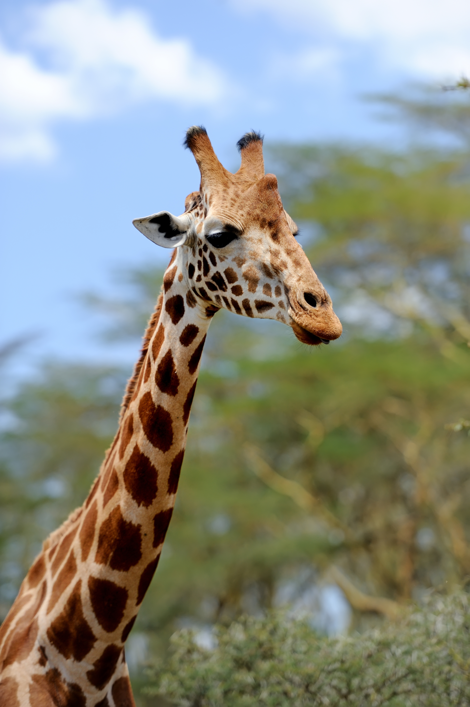
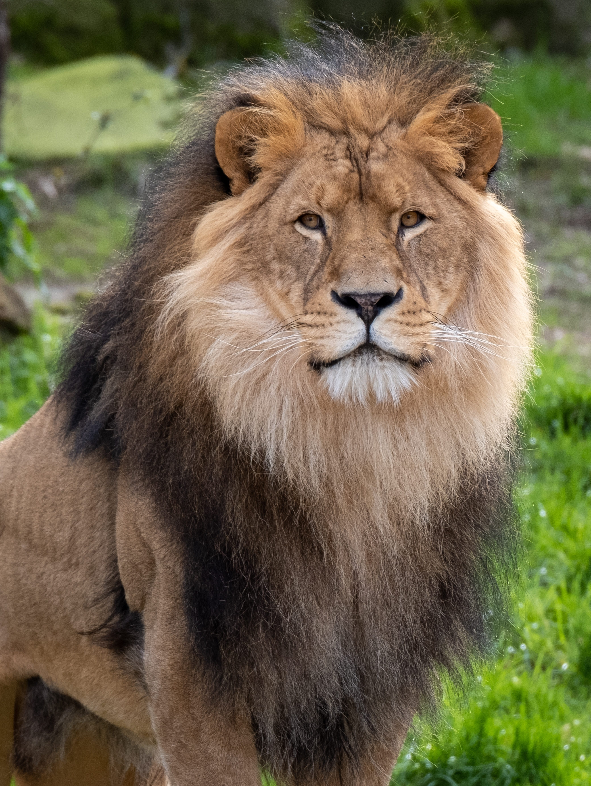

| ANIMALES | DESCRIPCION | IMAGEN |
|---|---|---|
| TORTUGA | Las tortugas son reptiles vertebrados antiguos, reconocibles por su caparazón óseo fusionado a la columna vertebral que protege sus órganos. Son ovíparas,de sangre fría y respiran aire. Existen especies marinas, acuáticas de agua dulce y terrestres, variando en dieta (herbívoras/omnívoras) y longevidad, viviendo a menudo más de 50-70 años. Son de los animales más longevos. En promedio viven 70 años, pero algunas especies superan los 150 años. Un ejemplar famoso llamado Jonathan ha vivido más de 190 años.No tienen dientes; en su lugar, poseen un pico de queratina muy duro para cortar su alimento.Se encuentran en todos los continentes excepto en la Antártida, habitando océanos, ríos, desiertos y bosques. Aunque son lentas en tierra, las tortugas marinas pueden nadar a velocidades de hasta 35 km/h. |
 TORTUGA |
| JIRAFA | Son los mamíferos más altos, con cuellos largos que tienen solo siete vértebras (como nosotros) pero enormes; sus manchas son únicas como huellas dactilares, su lengua azul oscuro de 50 cm las protege del sol, duermen poco (10 min-2h) de pie y pueden correr rápido (56 km/h), obteniendo agua de las hojas para pasar días sin beber, y sus corazones son tan grandes que bombean sangre hasta su cabeza, además de que se comunican con infrasonidos imperceptibles. Los machos pueden medir entre 5.5 y 6 metros, mientras que las hembras alcanzan hasta 4.5 metros. Un adulto puede pesar hasta 1,900 kg. Aunque su cuello puede medir 2 metros, posee solo siete vértebras cervicales, la misma cantidad que los seres humanos, Su lengua es de color oscuro (azulado/púrpura) y mide unos 50 cm. Es herbívora y consume principalmente hojas de acacia, usando su espesa saliva para protegerse de las espinas. El patrón de manchas en su piel es único para cada individuo, similar a una huella dactilar, y tiende a oscurecerse con la edad. |
 |
| LEON | Es un gran felino carnívoro, conocido por su vida social en manadas y la distintiva melena de los machos, que habitan principalmente en las sabanas africanas y asiáticas, cazando en grupo, descansando mucho y rugiendo para comunicarse a larga distancia. Son poderosos, con una mordida fuerte y colmillos largos, cazando ungulados grandes, y su pelaje varía de leonado a ocre, con cachorros que nacen con manchas que desaparecen. Es el único felino donde el macho y la hembra son físicamente muy distintos. Los machos poseen una melena (que indica salud y protege el cuello en peleas) y son un 20-30% más grandes que las hembras. Los machos pesan entre 150 y 250 kg, mientras que las hembras oscilan entre 120 y 180 kg.Son animales predominantemente nocturnos y crepusculares. Pasan unas 20 horas al día descansando para conservar energía para la caza. Su rugido es tan potente que puede escucharse hasta a 8-9 kilómetros de distancia, utilizándolo para marcar territorio o comunicarse. |
 |